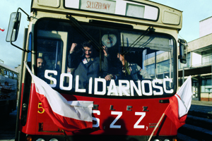
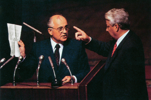
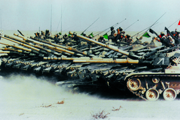
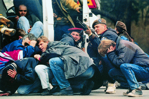

Lezione 20 La guerra fredda
La guerra fredda

-
135
492
-
130
600
-
219
565
-
175
504
-
135
462
-
140
550
-
180
230
-
200
544
-
165
477
-

DANZICA
Il sindacalista polacco Lech Walesa su un bus che espone lo striscione di Solidarnos, il primo sindacato indipendente polacco: in immagini come questa sono testimoniati i primi moti di ribellione che porteranno al crollo del blocco comunista orbitante intorno all'Unione Sovietica.

URSS
Un confronto tra Gorbaciov e Eltsin: i rapporti tra i due sono molto tesi, e Eltsin, nel suo mandato presidenziale, sancisce di fatto la dissoluzione dell'Unione Sovietica.
KUWAIT
La Prima guerra del Golfo vede le forze orbitanti intorno agli Stati Uniti d'America contro il regime del dittatore irakeno Saddam Hussein, che ha invaso il Kuwait: in questa foto vediamo una minacciosa schiera di carri armati durante un'esercitazione prima della battaglia.
BOSNIA
Una drammatica immagine della guerra nella Ex-Jugoslavia: militari e civili bosniaci tentano di ripararsi dal fuoco dei cecchini serbi.DANZICA
Nel 1980 gli operai dei cantieri navali di Danzica, in Polonia, avevano scioperato contro le durissime condizioni di lavoro e si erano organizzati in un sindacato che prese il nome di Solidarnosc.
Nel corso degli anni ottanta il sindacato diventa un movimento ispirato a principi cattolici e non violenti, e si propone come alternativa al partito unico di governo. Guidato dall'operaio Lech Walesa, partecipa nel 1989 alle prime libere elezioni politiche e ottiene una schiacciante vittoria, aprendo la strada ad analoghi risultati negli altri paesi del blocco sovietico.
L'anno successivo Walesa diventa presidente della repubblica polacca.MOSCA
Il 12 giugno 1991 Boris Eltsin vince in Russia le prime elezioni democratiche e diventa presidente della repubblica. In agosto acquista grande visibilità arringando la folla contro i militari conservatori che tentano un colpo di stato contro Gorbaciov. Ma in seguito accusa quest'ultimo di frenare le riforme, e a dicembre firma con i presidenti di Ucraina e Bielorussia un trattato che sancisce di fatto la dissoluzione dell'Unione Sovietica.
Il trattato viene ratificato pochi giorni dopo dal soviet supremo. Gorbaciov si dimette. Eltsin resterà presidente della repubblica russa fino al 31 dicembre 1999.WASHINGTON
George Bush senior diventa presidente degli Stati Uniti nel 1988 succedendo a Ronald Reagan. Durante la sua presidenza cade il muro di Berlino e l'Unione Sovietica si dissolve. Ma la fine della Guerra fredda e la successiva vittoria nella Prima guerra del Golfo, combattuta contro l'Iraq di Saddam Hussein, non gli valgono la riconferma.
Nel 1992 gli americani, delusi per la crisi economica e l'aumento delle tasse, eleggono il candidato democratico Bill Clinton.KUWAIT
Il 2 agosto del 1990 il dittatore irakeno Sadam Hussein invade l'emirato del Kuwait, che considera parte dell'Iraq.
Nel gennaio del 1991, su mandato dell'Onu, le truppe americane, supportate da una coalizione di 35 stati tra cui l'Italia, intervengono e costringono gli irakeni a ritirarsi. La Prima guerra del Golfo si conclude con un cessate il fuco che lascia Saddam Hussein al potere. Il nodo medio-orientale, già complicato per l'eterno conflitto tra Israele e il mondo arabo, diventa il più grave punto di crisi dello scenario internazionale.EX YUGOSLAVIA
Tra il 1991 e il 1995 si sviluppano, nei territori della federazione jugoslava, che si smembra, una serie di violenti scontri su base etnica, religiosa ed economica, con il pesante coinvolgimento di civili inermi.
Per la prima volta dopo la fine della Seconda guerra mondiale l'Europa vive un conflitto armato all'interno dei sui confini. Un fragile equilibrio viene raggiunto con gli accordi di Dayton del 1995. Ma nel 1999 si ritorna a combattere per il Kossovo, provincia serba a maggioranza albanese. Le forze aeree della Nato, che partono anche da basi italiane, costringono la Serbia a capitolare.